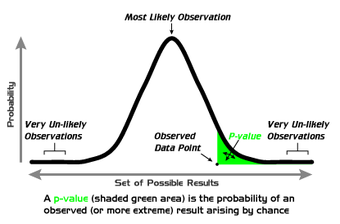
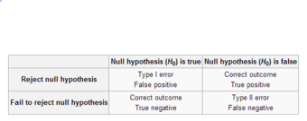

Table of Contents
14. A Closer Look at Tests of Significance
14.1. Which Test?
14.1.1. Descriptive or Inferential Statistics?
14.1.2. Hypothesis Tests or Confidence Intervals?
14.1.3. Quantitative or Qualitative Data?
14.1.4. One, Two, or More Groups?
14.2. A Closer Look at Tests of Significance
14.2.1. Was the Result Significant?
14.2.2. Data Snooping: Testing Hypotheses Once You've Seen the Data
14.2.3. Was the Result Important?
14.2.4. The Role of the Model
14.2.5. Does the Difference Prove the Point?
14. A Closer Look at Tests of Significance
14.1. Which Test?
14.1.1. Descriptive or Inferential Statistics?
Descriptive statistics and inferential statistics are both important components of statistics when learning about a population.
Learning Objective
Contrast descriptive and inferential statistics
Key Points
- Descriptive statistics are distinguished from inferential statistics in that descriptive statistics aim to summarize a sample, rather than use the data to learn about the population that the sample of data is thought to represent.
- Descriptive statistics provides simple summaries about the sample. These summaries may either form the basis of the initial description of the data as part of a more extensive statistical analysis, or they may be sufficient in and of themselves for a particular investigation.
- Statistical inference makes propositions about populations, using data drawn from the population of interest via some form of random sampling. This involves hypothesis testing using a variety of statistical tests.
Key Terms
- descriptive statistics
- A branch of mathematics dealing with summarization and description of collections of data sets, including the concepts of arithmetic mean, median, and mode.
- inferential statistics
- A branch of mathematics that involves drawing conclusions about a population based on sample data drawn from it.
Descriptive Statistics vs. Inferential Statistics
Descriptive statistics is the discipline of quantitatively describing the main features of a collection of data, or the quantitative description itself. Descriptive statistics are distinguished from inferential statistics in that descriptive statistics aim to summarize a sample, rather than use the data to learn about the population that the sample of data is thought to represent. This generally means that descriptive statistics, unlike inferential statistics, are not developed on the basis of probability theory. Even when a data analysis draws its main conclusions using inferential statistics, descriptive statistics are generally also presented. For example, in a paper reporting on a study involving human subjects, there typically appears a table giving the overall sample size, sample sizes in important subgroups (e.g., for each treatment or exposure group), and demographic or clinical characteristics such as the average age and the proportion of subjects of each sex.
Descriptive Statistics
Descriptive statistics provides simple summaries about the sample and about the observations that have been made. Such summaries may be either quantitative, i.e. summary statistics, or visual, i.e. simple-to-understand graphs. These summaries may either form the basis of the initial description of the data as part of a more extensive statistical analysis, or they may be sufficient in and of themselves for a particular investigation.
For example, the shooting percentage in basketball is a descriptive statistic that summarizes the performance of a player or a team. This number is the number of shots made divided by the number of shots taken. For example, a player who shoots 33% is making approximately one shot in every three. The percentage summarizes or describes multiple discrete events. Consider also the grade point average. This single number describes the general performance of a student across the range of their course experiences.
The use of descriptive and summary statistics has an extensive history and, indeed, the simple tabulation of populations and of economic data was the first way the topic of statistics appeared. More recently, a collection of summary techniques has been formulated under the heading of exploratory data analysis: an example of such a technique is the box plot .
{kind=link}
The box plot is a graphical depiction of descriptive statistics.
In the business world, descriptive statistics provide a useful summary of security returns when researchers perform empirical and analytical analysis, as they give a historical account of return behavior.
Inferential Statistics
For the most part, statistical inference makes propositions about populations, using data drawn from the population of interest via some form of random sampling. More generally, data about a random process is obtained from its observed behavior during a finite period of time. Given a parameter or hypothesis about which one wishes to make inference, statistical inference most often uses a statistical model of the random process that is supposed to generate the data and a particular realization of the random process.
The conclusion of a statistical inference is a statistical proposition. Some common forms of statistical proposition are:
- an estimate; i.e., a particular value that best approximates some parameter of interest
- a confidence interval (or set estimate); i.e., an interval constructed using a data set drawn from a population so that, under repeated sampling of such data sets, such intervals would contain the true parameter value with the probability at the stated confidence level
- a credible interval; i.e., a set of values containing, for example, 95% of posterior belief
- rejection of a hypothesis
- clustering or classification of data points into groups
14.1.2. Hypothesis Tests or Confidence Intervals?
Hypothesis tests and confidence intervals are related, but have some important differences.
Learning Objective
Explain how confidence intervals are used to estimate parameters of interest
Key Points
- When we conduct a hypothesis test, we assume we know the true parameters of interest.
- When we use confidence intervals, we are estimating the the parameters of interest.
- The confidence interval for a parameter is not the same as the acceptance region of a test for this parameter, as is sometimes thought.
- The confidence interval is part of the parameter space, whereas the acceptance region is part of the sample space.
Key Terms
- hypothesis test
- A test that defines a procedure that controls the probability of incorrectly deciding that a default position (null hypothesis) is incorrect based on how likely it would be for a set of observations to occur if the null hypothesis were true.
- confidence interval
- A type of interval estimate of a population parameter used to indicate the reliability of an estimate.
What is the difference between hypothesis testing and confidence intervals? When we conduct a hypothesis test, we assume we know the true parameters of interest. When we use confidence intervals, we are estimating the parameters of interest.
Explanation of the Difference
Confidence intervals are closely related to statistical significance testing. For example, if for some estimated parameter $\theta$ one wants to test the null hypothesis that $\theta=0$ against the alternative that $\theta \neq 0$ , then this test can be performed by determining whether the confidence interval for $\theta$ contains $0$ .
More generally, given the availability of a hypothesis testing procedure that can test the null hypothesis $\theta = \theta_0$ against the alternative that $\theta \neq \theta_0$ for any value of $\theta_0$ , then a confidence interval with confidence level $\gamma = 1-\alpha$ can be defined as containing any number $\theta_0$ for which the corresponding null hypothesis is not rejected at significance level $\alpha$ .
In consequence, if the estimates of two parameters (for example, the mean values of a variable in two independent groups of objects) have confidence intervals at a given $\gamma$ value that do not overlap, then the difference between the two values is significant at the corresponding value of $\alpha$ . However, this test is too conservative. If two confidence intervals overlap, the difference between the two means still may be significantly different.
While the formulations of the notions of confidence intervals and of statistical hypothesis testing are distinct, in some senses and they are related, and are complementary to some extent. While not all confidence intervals are constructed in this way, one general purpose approach is to define a $100(1-\alpha)$ % confidence interval to consist of all those values $\theta_0$ for which a test of the hypothesis $\theta = \theta_0$ is not rejected at a significance level of $100 \alpha$ %. Such an approach may not always be an option, since it presupposes the practical availability of an appropriate significance test. Naturally, any assumptions required for the significance test would carry over to the confidence intervals.
It may be convenient to say that parameter values within a confidence interval are equivalent to those values that would not be rejected by a hypothesis test, but this would be dangerous. In many instances the confidence intervals that are quoted are only approximately valid, perhaps derived from "plus or minus twice the standard error," and the implications of this for the supposedly corresponding hypothesis tests are usually unknown.
It is worth noting that the confidence interval for a parameter is not the same as the acceptance region of a test for this parameter, as is sometimes assumed. The confidence interval is part of the parameter space, whereas the acceptance region is part of the sample space. For the same reason, the confidence level is not the same as the complementary probability of the level of significance.

This graph illustrates a 90% confidence interval on a standard normal curve.
14.1.3. Quantitative or Qualitative Data?
Different statistical tests are used to test quantitative and qualitative data.
Learning Objective
Contrast quantitative and qualitative data
Key Points
- Quantitative (numerical) data is any data that is in numerical form, such as statistics and percentages.
- Qualitative (categorical) data deals with descriptions with words, such as gender or nationality.
- Paired and unpaired t-tests and z-tests are just some of the statistical tests that can be used to test quantitative data.
- One of the most common statistical tests for qualitative data is the chi-square test (both the goodness of fit test and test of independence).
Key Terms
- central limit theorem
- The theorem that states: If the sum of independent identically distributed random variables has a finite variance, then it will be (approximately) normally distributed.
- quantitative
- of a measurement based on some quantity or number rather than on some quality
- qualitative
- of descriptions or distinctions based on some quality rather than on some quantity
Quantitative Data vs. Qualitative Data
Recall the differences between quantitative and qualitative data.
Quantitative (numerical) data is any data that is in numerical form, such as statistics, percentages, et cetera. In layman's terms, a researcher studying quantitative data asks a specific, narrow question and collects a sample of numerical data from participants to answer the question. The researcher analyzes the data with the help of statistics and hopes the numbers will yield an unbiased result that can be generalized to some larger population.
Qualitative (categorical) research, on the other hand, asks broad questions and collects word data from participants. The researcher looks for themes and describes the information in themes and patterns exclusive to that set of participants. Examples of qualitative variables are male/female, nationality, color, et cetera.
Quantitative Data Tests
Paired and unpaired t-tests and z-tests are just some of the statistical tests that can be used to test quantitative data. We will give a brief overview of these tests here.
A t-test is any statistical hypothesis test in which the test statistic follows a t distribution if the null hypothesis is supported. It can be used to determine if two sets of data are significantly different from each other and is most commonly applied when the test statistic would follow a normal distribution if the value of a scaling term in the test statistic were known. When the scaling term is unknown and is replaced by an estimate based on the data, the test statistic (under certain conditions) follows a t distribution .

Plots of the t distribution for several different degrees of freedom.
A z-test is any statistical test for which the distribution of the test statistic under the null hypothesis can be approximated by a normal distribution. Because of the central limit theorem, many test statistics are approximately normally distributed for large samples. For each significance level, the z-test has a single critical value. This fact makes it more convenient than the t-test, which has separate critical values for each sample size. Therefore, many statistical tests can be conveniently performed as approximate z-tests if the sample size is large or the population variance known.
Qualitative Data Tests
One of the most common statistical tests for qualitative data is the chi-square test (both the goodness of fit test and test of independence).
The chi-square test tests a null hypothesis stating that the frequency distribution of certain events observed in a sample is consistent with a particular theoretical distribution. The events considered must be mutually exclusive and have total probability. A common case for this test is where the events each cover an outcome of a categorical variable. A test of goodness of fit establishes whether or not an observed frequency distribution differs from a theoretical distribution, and a test of independence assesses whether paired observations on two variables, expressed in a contingency table, are independent of each other (e.g., polling responses from people of different nationalities to see if one's nationality is related to the response).
14.1.4. One, Two, or More Groups?
Different statistical tests are required when there are different numbers of groups (or samples).
Learning Objective
Identify the appropriate statistical test required for a group of samples
Key Points
- One-sample tests are appropriate when a sample is being compared to the population from a hypothesis. The population characteristics are known from theory or are calculated from the population.
- Two-sample tests are appropriate for comparing two samples, typically experimental and control samples from a scientifically controlled experiment.
- Paired tests are appropriate for comparing two samples where it is impossible to control important variables.
- $F$ -tests (analysis of variance, also called ANOVA) are used when there are more than two groups. They are commonly used when deciding whether groupings of data by category are meaningful.
Key Terms
- z-test
- Any statistical test for which the distribution of the test statistic under the null hypothesis can be approximated by a normal distribution.
- t-test
- Any statistical hypothesis test in which the test statistic follows a Student's
$t$ -distribution if the null hypothesis is supported.
Depending on how many groups (or samples) with which we are working, different statistical tests are required.
One-sample tests are appropriate when a sample is being compared to the population from a hypothesis. The population characteristics are known from theory, or are calculated from the population. Two-sample tests are appropriate for comparing two samples, typically experimental and control samples from a scientifically controlled experiment. Paired tests are appropriate for comparing two samples where it is impossible to control important variables. Rather than comparing two sets, members are paired between samples so the difference between the members becomes the sample. Typically the mean of the differences is then compared to zero.
The number of groups or samples is also an important deciding factor when determining which test statistic is appropriate for a particular hypothesis test. A test statistic is considered to be a numerical summary of a data-set that reduces the data to one value that can be used to perform a hypothesis test. Examples of test statistics include the $z$ -statistic, $t$ -statistic, chi-square statistic, and $F$ -statistic.
A $z$ -statistic may be used for comparing one or two samples or proportions. When comparing two proportions, it is necessary to use a pooled standard deviation for the $z$ -test. The formula to calculate a $z$ -statistic for use in a one-sample $z$ -test is as follows:
where $\bar{x}$ is the sample mean, $\mu$ is the population mean, $\sigma$ is the population standard deviation, and $n$ is the sample size.
A $t$ -statistic may be used for one sample, two samples (with a pooled or unpooled standard deviation), or for a regression $t$ -test. The formula to calculate a $t$ -statistic for a one-sample $t$ -test is as follows:
where $\bar{x}$ is the sample mean, $\mu$ is the population mean, $s$ is the sample standard deviation, and $n$ is the sample size.
$F$ -tests (analysis of variance, also called ANOVA) are used when there are more than two groups. They are commonly used when deciding whether groupings of data by category are meaningful. If the variance of test scores of the left-handed in a class is much smaller than the variance of the whole class, then it may be useful to study lefties as a group. The null hypothesis is that two variances are the same, so the proposed grouping is not meaningful.
14.2. A Closer Look at Tests of Significance
14.2.1. Was the Result Significant?
Results are deemed significant if they are found to have occurred by some reason other than chance.
Learning Objective
Assess the statistical significance of data for a null hypothesis
Key Points
- In statistical testing, a result is deemed statistically significant if it is so extreme (without external variables which would influence the correlation results of the test) that such a result would be expected to arise simply by chance only in rare circumstances.
- If a test of significance gives a p-value lower than or equal to the significance level, the null hypothesis is rejected at that level.
- Different levels of cutoff trade off countervailing effects. Lower levels – such as 0.01 instead of 0.05 – are stricter, and increase confidence in the determination of significance, but run an increased risk of failing to reject a false null hypothesis.
Key Terms
- statistical significance
- A measure of how unlikely it is that a result has occurred by chance.
- null hypothesis
- A hypothesis set up to be refuted in order to support an alternative hypothesis; presumed true until statistical evidence in the form of a hypothesis test indicates otherwise.
Statistical significance refers to two separate notions: the p-value (the probability that the observed data would occur by chance in a given single null hypothesis); or the Type I error rate α (false positive rate) of a statistical hypothesis test (the probability of incorrectly rejecting a given null hypothesis in favor of a second alternative hypothesis).
A fixed number, most often 0.05, is referred to as a significance level or level of significance; such a number may be used either in the first sense, as a cutoff mark for p-values (each p-value is calculated from the data), or in the second sense as a desired parameter in the test design (α depends only on the test design, and is not calculated from observed data). In this atom, we will focus on the p-value notion of significance.
What is Statistical Significance?
Statistical significance is a statistical assessment of whether observations reflect a pattern rather than just chance. When used in statistics, the word significant does not mean important or meaningful, as it does in everyday speech; with sufficient data, a statistically significant result may be very small in magnitude.
The fundamental challenge is that any partial picture of a given hypothesis, poll, or question is subject to random error. In statistical testing, a result is deemed statistically significant if it is so extreme (without external variables which would influence the correlation results of the test) that such a result would be expected to arise simply by chance only in rare circumstances. Hence the result provides enough evidence to reject the hypothesis of 'no effect'.
For example, tossing 3 coins and obtaining 3 heads would not be considered an extreme result. However, tossing 10 coins and finding that all 10 land the same way up would be considered an extreme result: for fair coins, the probability of having the first coin matched by all 9 others is rare. The result may therefore be considered statistically significant evidence that the coins are not fair.
The calculated statistical significance of a result is in principle only valid if the hypothesis was specified before any data were examined. If, instead, the hypothesis was specified after some of the data were examined, and specifically tuned to match the direction in which the early data appeared to point, the calculation would overestimate statistical significance.
Use in Practice
Popular levels of significance are 10% (0.1), 5% (0.05), 1% (0.01), 0.5% (0.005), and 0.1% (0.001). If a test of significance gives a p-value lower than or equal to the significance level , the null hypothesis is rejected at that level. Such results are informally referred to as 'statistically significant (at the p = 0.05 level, etc.)'. For example, if someone argues that "there's only one chance in a thousand this could have happened by coincidence", a 0.001 level of statistical significance is being stated. The lower the significance level chosen, the stronger the evidence required. The choice of significance level is somewhat arbitrary, but for many applications, a level of 5% is chosen by convention.
{kind=link}
A graphical depiction of the meaning of p-values.
Different levels of cutoff trade off countervailing effects. Lower levels – such as 0.01 instead of 0.05 – are stricter, and increase confidence in the determination of significance, but run an increased risk of failing to reject a false null hypothesis. Evaluation of a given p-value of data requires a degree of judgment, and rather than a strict cutoff, one may instead simply consider lower p-values as more significant.
14.2.2. Data Snooping: Testing Hypotheses Once You've Seen the Data
Testing hypothesis once you've seen the data may result in inaccurate conclusions.
Learning Objective
Explain how to test a hypothesis using data
Key Points
- Testing a hypothesis suggested by the data can very easily result in false positives (type I errors). If one looks long enough and in enough different places, eventually data can be found to support any hypothesis.
- If the hypothesis was specified after some of the data were examined, and specifically tuned to match the direction in which the early data appeared to point, the calculation would overestimate statistical significance.
- Sometimes, people deliberately test hypotheses once they've seen the data. Data snooping (also called data fishing or data dredging) is the inappropriate (sometimes deliberately so) use of data mining to uncover misleading relationships in data.
Key Terms
- Type I error
- Rejecting the null hypothesis when the null hypothesis is true.
- data snooping
- the inappropriate (sometimes deliberately so) use of data mining to uncover misleading relationships in data
The calculated statistical significance of a result is in principle only valid if the hypothesis was specified before any data were examined. If, instead, the hypothesis was specified after some of the data were examined, and specifically tuned to match the direction in which the early data appeared to point, the calculation would overestimate statistical significance.
Testing Hypotheses Suggested by the Data
Testing a hypothesis suggested by the data can very easily result in false positives (type I errors) . If one looks long enough and in enough different places, eventually data can be found to support any hypothesis. Unfortunately, these positive data do not by themselves constitute evidence that the hypothesis is correct. The negative test data that were thrown out are just as important, because they give one an idea of how common the positive results are compared to chance. Running an experiment, seeing a pattern in the data, proposing a hypothesis from that pattern, then using the same experimental data as evidence for the new hypothesis is extremely suspect, because data from all other experiments, completed or potential, has essentially been "thrown out" by choosing to look only at the experiments that suggested the new hypothesis in the first place.
{kind=link}
This table depicts the difference types of errors in significance testing.
A large set of tests as described above greatly inflates the probability of type I error as all but the data most favorable to the hypothesis is discarded. This is a risk, not only in hypothesis testing but in all statistical inference as it is often problematic to accurately describe the process that has been followed in searching and discarding data. In other words, one wants to keep all data (regardless of whether they tend to support or refute the hypothesis) from "good tests", but it is sometimes difficult to figure out what a "good test" is. It is a particular problem in statistical modelling, where many different models are rejected by trial and error before publishing a result.
The error is particularly prevalent in data mining and machine learning. It also commonly occurs in academic publishing where only reports of positive, rather than negative, results tend to be accepted, resulting in the effect known as publication bias..
Data Snooping
Sometimes, people deliberately test hypotheses once they've seen the data. Data snooping (also called data fishing or data dredging) is the inappropriate (sometimes deliberately so) use of data mining to uncover misleading relationships in data. Data-snooping bias is a form of statistical bias that arises from this misuse of statistics. Any relationships found might appear valid within the test set but they would have no statistical significance in the wider population. Although data-snooping bias can occur in any field that uses data mining, it is of particular concern in finance and medical research, which both heavily use data mining.
14.2.3. Was the Result Important?
The results are deemed important if they change the effects of an event.
Learning Objective
Distinguish the difference between the terms 'significance' and 'importance' in statistical assessments
Key Points
- When used in statistics, the word significant does not mean important or meaningful, as it does in everyday speech; with sufficient data, a statistically significant result may be very small in magnitude.
- Importance is a measure of the effects of the event. A difference can be significant, but not important.
- It is preferable for researchers to not look solely at significance, but to examine effect-size statistics, which describe how large the effect is and the uncertainty around that estimate, so that the practical importance of the effect may be gauged by the reader.
Key Terms
- null hypothesis
- A hypothesis set up to be refuted in order to support an alternative hypothesis; presumed true until statistical evidence in the form of a hypothesis test indicates otherwise.
- statistical significance
- A measure of how unlikely it is that a result has occurred by chance.
Significance vs. Importance
Statistical significance is a statistical assessment of whether observations reflect a pattern rather than just chance. When used in statistics, the word significant does not mean important or meaningful, as it does in everyday speech; with sufficient data, a statistically significant result may be very small in magnitude.
If a test of significance gives a $p$ -value lower than or equal to the significance level, the null hypothesis is rejected at that level . Such results are informally referred to as 'statistically significant (at the $p=0.05$ level, etc.)'. For example, if someone argues that "there's only one chance in a thousand this could have happened by coincidence", a $0.001$ level of statistical significance is being stated. Once again, this does not mean that the findings are important.
{kind=link}
A graphical depiction of the meaning of $p$ -values.
So what is importance? Importance is a measure of the effects of the event. For example, we could measure two different one-cup measuring cups enough times to find that their volumes are statistically different at a significance level of $0.001$ . But is this difference important? Would this slight difference make a difference in the cookies you're trying to bake? No. The difference in this case is statistically significant at a certain level, but not important.
Researchers focusing solely on whether individual test results are significant or not may miss important response patterns which individually fall under the threshold set for tests of significance. Therefore along with tests of significance, it is preferable to examine effect-size statistics, which describe how large the effect is and the uncertainty around that estimate, so that the practical importance of the effect may be gauged by the reader.
14.2.4. The Role of the Model
A statistical model is a set of assumptions concerning the generation of the observed data and similar data.
Learning Objective
Explain the significance of valid models in statistical inference
Key Points
- Statisticians distinguish between three levels of modeling assumptions: fully-parametric, non-parametric, and semi-parametric.
- Descriptions of statistical models usually emphasize the role of population quantities of interest, about which we wish to draw inference. Descriptive statistics are typically used as a preliminary step before more formal inferences are drawn.
- Whatever level of assumption is made, correctly calibrated inference in general requires these assumptions to be correct; i.e., that the data-generating mechanisms have been correctly specified.
Key Terms
- Simple Random Sampling
- Method where each individual is chosen randomly and entirely by chance, such that each individual has the same probability of being chosen at any stage during the sampling process, and each subset of k individuals has the same probability of being chosen for the sample as any other subset of k individuals.
- covariate
- a variable that is possibly predictive of the outcome under study
Any statistical inference requires assumptions. A statistical model is a set of assumptions concerning the generation of the observed data and similar data. Descriptions of statistical models usually emphasize the role of population quantities of interest, about which we wish to draw inference. Descriptive statistics are typically used as a preliminary step before more formal inferences are drawn.
Degrees of Models
Statisticians distinguish between three levels of modeling assumptions:
- Fully-parametric. The probability distributions describing the data-generation process are assumed to be fully described by a family of probability distributions involving only a finite number of unknown parameters. For example, one may assume that the distribution of population values is truly Normal , with unknown mean and variance, and that data sets are generated by simple random sampling. The family of generalized linear models is a widely used and flexible class of parametric models.
- Non-parametric. The assumptions made about the process generating the data are much fewer than in parametric statistics and may be minimal. For example, every continuous probability distribution has a median that may be estimated using the sample median, which has good properties when the data arise from simple random sampling.
- Semi-parametric. This term typically implies assumptions in between fully and non-parametric approaches. For example, one may assume that a population distribution has a finite mean. Furthermore, one may assume that the mean response level in the population depends in a truly linear manner on some covariate (a parametric assumption), but not make any parametric assumption describing the variance around that mean. More generally, semi-parametric models can often be separated into 'structural' and 'random variation' components. One component is treated parametrically and the other non-parametrically.
Importance of Valid Models
Whatever level of assumption is made, correctly calibrated inference in general requires these assumptions to be correct (i.e., that the data-generating mechanisms have been correctly specified).
Incorrect assumptions of simple random sampling can invalidate statistical inference. More complex semi- and fully parametric assumptions are also cause for concern. For example, incorrect "Assumptions of Normality" in the population invalidate some forms of regression-based inference. The use of any parametric model is viewed skeptically by most experts in sampling human populations. In particular, a normal distribution would be a totally unrealistic and unwise assumption to make if we were dealing with any kind of economic population. Here, the central limit theorem states that the distribution of the sample mean for very large samples is approximately normally distributed, if the distribution is not heavy tailed.
14.2.5. Does the Difference Prove the Point?
Rejecting the null hypothesis does not necessarily prove the alternative hypothesis.
Learning Objective
Assess whether a null hypothesis should be accepted or rejected
Key Points
- The "fail to reject" terminology highlights the fact that the null hypothesis is assumed to be true from the start of the test; therefore, if there is a lack of evidence against it, it simply continues to be assumed true.
- The phrase "accept the null hypothesis" may suggest it has been proven simply because it has not been disproved, a logical fallacy known as the argument from ignorance.
- Unless a test with particularly high power is used, the idea of "accepting" the null hypothesis may be dangerous.
- Whether rejection of the null hypothesis truly justifies acceptance of the alternative hypothesis depends on the structure of the hypotheses.
- Hypothesis testing emphasizes the rejection, which is based on a probability, rather than the acceptance, which requires extra steps of logic.
Key Terms
- null hypothesis
- A hypothesis set up to be refuted in order to support an alternative hypothesis; presumed true until statistical evidence in the form of a hypothesis test indicates otherwise.
- p-value
- The probability of obtaining a test statistic at least as extreme as the one that was actually observed, assuming that the null hypothesis is true.
- alternative hypothesis
- a rival hypothesis to the null hypothesis, whose likelihoods are compared by a statistical hypothesis test
In statistical hypothesis testing, tests are used in determining what outcomes of a study would lead to a rejection of the null hypothesis for a pre-specified level of significance; this can help to decide whether results contain enough information to cast doubt on conventional wisdom, given that conventional wisdom has been used to establish the null hypothesis. The critical region of a hypothesis test is the set of all outcomes which cause the null hypothesis to be rejected in favor of the alternative hypothesis.
Accepting the Null Hypothesis vs. Failing to Reject It
It is important to note the philosophical difference between accepting the null hypothesis and simply failing to reject it. The "fail to reject" terminology highlights the fact that the null hypothesis is assumed to be true from the start of the test; if there is a lack of evidence against it, it simply continues to be assumed true. The phrase "accept the null hypothesis" may suggest it has been proved simply because it has not been disproved, a logical fallacy known as the argument from ignorance. Unless a test with particularly high power is used, the idea of "accepting" the null hypothesis may be dangerous. Nonetheless, the terminology is prevalent throughout statistics, where its meaning is well understood.
Alternatively, if the testing procedure forces us to reject the null hypothesis ($H_0$ ), we can accept the alternative hypothesis ($H_1$ ) and we conclude that the research hypothesis is supported by the data. This fact expresses that our procedure is based on probabilistic considerations in the sense we accept that using another set of data could lead us to a different conclusion.
What Does This Mean?
If the $p$ -value is less than the required significance level (equivalently, if the observed test statistic is in the critical region), then we say the null hypothesis is rejected at the given level of significance. Rejection of the null hypothesis is a conclusion. This is like a "guilty" verdict in a criminal trial—the evidence is sufficient to reject innocence, thus proving guilt. We might accept the alternative hypothesis (and the research hypothesis).
{kind=link}
A graphical depiction of the meaning of $p$ -values.
If the $p$ -value is not less than the required significance level (equivalently, if the observed test statistic is outside the critical region), then the test has no result. The evidence is insufficient to support a conclusion. This is like a jury that fails to reach a verdict. The researcher typically gives extra consideration to those cases where the $p$ -value is close to the significance level.
Whether rejection of the null hypothesis truly justifies acceptance of the research hypothesis depends on the structure of the hypotheses. Rejecting the hypothesis that a large paw print originated from a bear does not immediately prove the existence of Bigfoot. The two hypotheses in this case are not exhaustive; there are other possibilities. Maybe a moose made the footprints. Hypothesis testing emphasizes the rejection which is based on a probability rather than the acceptance which requires extra steps of logic.